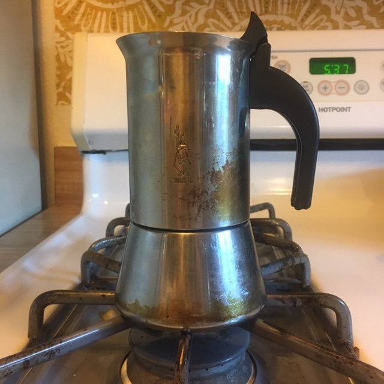
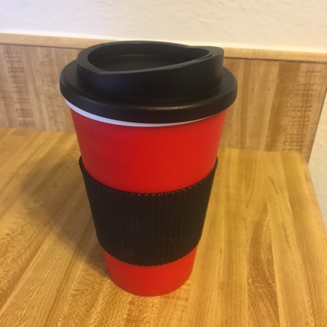

April 15, 2020
Reading How Bad are Bananas? was enjoyable, quick and a good reference when thinking about the choices I make and how they impact my overall carbon footprint. The author does a combination of looking at very specific figures gotten from highly tuned sources to making rough estimations based on things that we don't really know how exactly to calculate. It is worth noting the book came out 10 years ago next month, so when he talks about changing light bulbs, we already did that! There are other places where we have made big strides in sustainability in the last 10 years that are worth mentioning, like the portion of renewable resources that are used for electricity and the proliferation of e-readers.
One thing that Berners-Lee is a little inconsistent with (although in many places he admits it) is when he does and does not include the complete cost of production of an item, and when he is considering the impact of the profit made by the seller as an impact. His main point is the order of magnitude of the carbon impact a single event or item consumed will have rather than exact number of grams of carbon-dioxide equivalent1 (hereafter CO2 e) that are consumed. A cup of coffee for instance, is an order of magnitude less expensive than a paperback book, and an order of magnitude greater than an email with an image or two attached.
I could go on about the things I thought were done well verse what I felt could do better, but I'm instead going to change things up. Rather than continuing to dive into a full on book review, I want to, using the calculations that Berners-Lee has provided as well as some additional resources I've scoured off the internet, take a closer look at the impact of a 12oz cup of coffee.
Berners-Lee says the carbon cost of a cup of coffee is 23g CO2e if you only boil what you need, so a percolator, 55g is you boil only what you need and add milk, and 74g if you boil double what you need and add milk. Also 343g for a large latte... but we're going to focus on straight coffee. Though he doesn't say what size the coffee is, given that the difference between the latter two figures is 19g CO2e, and that should only cover the additional water boiled. Given that he's assuming an electric kettle and he's discovered that it's 70g to heat a quart (or liter) of water in a kettle, then we can determine that the size of the cup of coffee is 8.7oz. Given that this is America, and we drink larger cups of coffee here (the author is english) I'm going to upgrade that to 12oz, therefore the cost of heating the water is 26g CO2e in the kettle, and 18.752 in the percolator which is a stovetop item (50g CO2e on the stovetop).
What all of this means is that based on this assumption, Berners-Lee is only attributing 4g per cup of coffee to all of the other resources that go into drinking it including the production, the shipping, the roasting, the distribution of the coffee grounds, as well as the long term upkeep (or not) of whatever vessel you're using, and potentially the methane releases of the coffee grounds after their disposal - though it's possible he didn't include that is his calculations. Let's see if that adds up.
| Stove top Percolator (no extra water) | Pour over Coffee, electric kettle (double water) | Disposable Cup, from a shop (no extra water, electric) |
|---|---|---|
|  |  | |
| Heating water + drinking vessel + production + waste ( + storefront cost ) | ||
| (Without proper disposal techniques) | ||
| 19g + 3.7g + 14g + 28.5g65.2g CO2e | 52g + 3.7g + 14g + 28.5g98.2g CO2e | 26g + 8.1g + 14g + 28.5g + 138g214.6g CO2e* |
| (With Backyard Composting, but not including methane capture) | ||
| 19g + 3.7g + 14g + 0g36.7g CO2e | 52g + 3.7g + 14g + 0g69.7g CO2e | 26g + 3.8g + 14g + 0g + 542g585.8g CO2e |
According to Watch My Waster which also describes the CO2e ratio for methane to be 25x, 1kg of food waste creates 1.9kg CO2e. I just measured the weight of the coffee grounds that I normally consume, and it's about 15g per brewed cup. Given that, the methane release of the grounds alone is 28.5g CO2e if not properly disposed of. What's interesting however is that ground coffee that has been composted instead of put directly into a landfill has the potential to absorb up to 7% of it's weight (about 1g) in methane gas3, which brings us to an equivalent of -25g CO2e. If you're composting in your backyard like I am, then there is only the embedded cost of the tumbler to consider when calculating the cost of composting (as opposed to the required transport and upkeep of an industrial composting facility).
Based on variations between the potential release and potential capture of methane gas per cup of coffee and them not being articulated in Berners-Lee's description of the carbon cost, I think it's safe to assume they were not included.
There are two main options when it comes to coffee drinking vessels - reusable mugs and disposable cups. We could go into the difference between a ceramic mug and a steel travel mug, but we're not going to.
Calculating the carbon cost of a disposable cup seems pretty straight forward, because most of the cost is tied up in the production and waste, but it also depends on whether the paper is sustainable sourced or if it is the result of deforestation. Unrecycled, the cost of the cup is 8.1g CO2e, but recycled it is only 3.8g CO2e4. Let's assume you're going to recycle if only because you're reading this.
If it's the result of deforestation, and a cup weighs 10g, that's 7E-6% of a deforested hectacre (500T CO2e) or 35g of CO2e consumed5. Your standard Starbucks paper cup is made of 10% recycled materials6, and you can probably assume that the paper they are sourcing is coming from land that is designated for paper production, and after it's been used it will be used again.
Reusable coffee mugs are slightly harder to calculate with accuracy, because you have to consider the production cost of the mug as well as the cost of washing the mug. Let's say you have 10 mugs (they accumulate okay!), you use one a day and the average lifespan of your mugs is 10 years. That means on average you're using each mug 36 times a year and 360 times during it's lifetime7. According to one study, you have to use a single mug 350 times to make it more carbon efficient than a paper cup that has been recycled8 due to having to wash it. So if the carbon cost of a mug after 350 uses is 3.8g x 350 or 1.33kg CO2e, and you use it 360 times, the cost is about 3.7g CO2e per use. The one benefit is that once in a landfill a ceramic mug will have virtually no methane gas release, and also takes up significantly less space, so if the paper coffee cup would have been thrown away, the number of times a mug needs to be reused drops significantly.
It seems prudent to mention the carbon efficiency of making a new percolator (about 500g of steel). Steel production creates carbon emissions about about a 1:1.85 rate of weight of steel to weight of CO2e. So if you use your percolator once a day for 10 years, that's 925g CO2 / 3650 uses, or only about .25g per use, relatively negligible.
A detailed breakdown of the supply chain of coffee based on the study noted here.
Based on the research I found, I can't believe that Berners-Lee considered the carbon cost of coffee production in his estimate. According to a study done by the Business Association of Latin American Studies, the carbon cost of a cup of Costa Rican coffee shipped to Europe is 59.12g CO2e9 including consumption. In the study it notes that about 71% (42g CO2e) of the carbon cost is in the consumer making it, and as Berners-Lee suggested, much of that comes from heating up water. 24% (14g) is made up of the roasting, packaging and distributing, while 5% (3g) comes from the disposal of coffee10.
If you're getting your coffee from a coffee establishment, then you may also want to consider the infrastructure cost of that coffee existing. 8% of the 16.5 million tons of CO2e emissions per year come from the store itself. Starbucks makes 60% of it's profit from beverages12 - for the sake of argument let's say that all their beverages are coffee. They serve 15.6 million cups of coffee a day, so 5.7 billion cups a year. That's in theory 138g CO2e baked into your to-go cup of coffee just by getting it from starbucks. Now, one might note that the ovens that are being used to make their baked goods don't contribute to the cost of your cup of coffee, ovens only make up 9% of their carbon emissions in store.
I think it's safe to say the production costs of coffee are not considered by the author of How Bad Are Bananas?, nor are the methane costs of grounds making their way into a landfill. Given this information, I think some new values are in order, and can be checked out in the table above.
Given that I drank 12oz of coffee with about a tablespoon of milk in it, and will be backyard composting my grounds, when asked how bad is my coffee, I can answer it's producing 100.7g CO2 worth of waste.
10 Based on this study, it looks like my estimates for the disposal of coffee grounds is way off, and it may well be, it is not clear where the grounds wind up in their end-of life scenario.
The end-of life phase took into account the disposal of primary and secondary packaging and coffee grounds. The coffee skin from the roasting plant is used to generate thermal energy and as a substitute for wood pallets and natural gas.